日本フィジカルAI新聞
https://physicalainews.jp
フィジカルAI(ロボット基盤モデル)の世界の動きを日本語で追う専門紙。ニュース・企業DB・Robot DB・論文・入札公募・イベント。
フィード
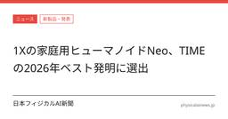
1Xの家庭用ヒューマノイドNeo、TIMEの2026年ベスト発明に選出
日本フィジカルAI新聞
TIMEは10月15日付で、1X Technologiesの家庭用ヒューマノイド「Neo」を「Best Inventions of 2026」に選んだ。対象は家庭内作業向けの機体で、TIMEは価格を2万ドルとし、2026年に世界展開したと伝えた。本件は製品評価の報道であり、量産台数や供給体制よりも、家庭用ヒューマノイドの位置づけが焦点になる。
1時間前
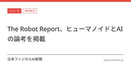
The Robot Report、ヒューマノイドとAIの論考を掲載
日本フィジカルAI新聞
The Robot Reportは、AIの進歩でヒューマノイドが研究段階を離れ、工場で使われ始めているとする論考を掲載した。記事は、Boston DynamicsのAtlasや、Tesla、AmazonやNVIDIAの支援を受ける新興企業、中国の国有企業を例に挙げている。
2時間前
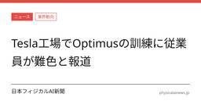
Tesla工場でOptimusの訓練に従業員が難色と報道
日本フィジカルAI新聞
Ars Technicaは9月25日、Teslaの従業員がOptimus人型ロボットの訓練を担うことに難色を示していると報じた。
2時間前
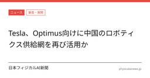
Tesla、Optimus向けに中国のロボティクス供給網を再び活用か
日本フィジカルAI新聞
TeslaがOptimus向けに中国拠点のロボティクス供給業者を呼びかけていると、Yahoo Financeが9月24日に報じた。
4時間前
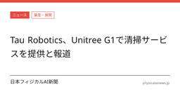
Tau Robotics、Unitree G1で清掃サービスを提供と報道
日本フィジカルAI新聞
Tau Roboticsが、改造したUnitree G1を使い、サンフランシスコの住宅やオフィスで清掃サービスを提供していると報じられた。
5時間前
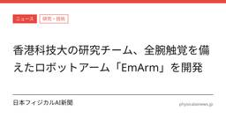
香港科技大の研究チーム、全腕触覚を備えたロボットアーム「EmArm」を開発
日本フィジカルAI新聞
香港科技大学（HKUST）の研究チームが、全腕触覚を備えたEmbodied Sensorimotor Robotic Arm「EmArm」を開発した。柔らかい光学式触覚スキンをロボット骨格に組み込み、リアルタイム判断アルゴリズムと統合した点が特徴である。『こちょばし』と『たたく』のような触り方の違いを識別し、触覚フィードバックで障害物回避も行うとされる。
5時間前
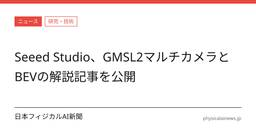
Seeed Studio、GMSL2マルチカメラとBEVの解説記事を公開
日本フィジカルAI新聞
Seeed Studioが「Give the Robot Its Eyes — GMSL2 Multi-Camera, Calibration, and BEV」と題した記事を公開した。掲載日は2026年10月16日である。主ソースは解説記事であり、発言や論旨を含むが、一次情報としての製品発表や数値は確認できない。本紙の過去報道ではSeeed Studioがロボットアームや周辺機器の紹介を続けており、今回は視覚・認識系の解説に重心が移っている。
5時間前
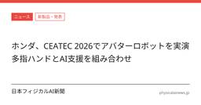
ホンダ、CEATEC 2026でアバターロボットを展示
日本フィジカルAI新聞
ホンダはCEATEC 2026で、遠隔操作で作業できるアバターロボットを展示した。多指ハンドとAIによる操作支援を組み合わせた技術で、会場ではねじ締めの実演が行われた。
5時間前
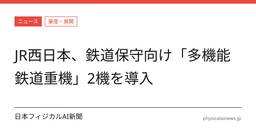
JR西日本、鉄道保守向け「多機能鉄道重機」2機を導入
日本フィジカルAI新聞
JR西日本が鉄道保守の人手不足対策として「多機能鉄道重機」2機を導入したと産経ニュースが報じた。導入の狙いは、保守作業の一部をロボット技術で補うことにある。詳細な機能や運用条件は記事本文の確認が必要である。
6時間前
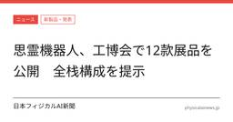
思霊機器人、工博会で12款展品を公開 全栈構成を提示
日本フィジカルAI新聞
思霊機器人は工博会で12款展品と五大展区を打ち出した。出展内容は核心伝感器から機器人操作系統、具身模型までを含む。会場では工業、康养、科研、文創など多元場景を並べ、技術底座から応用までを一体で示した。本紙は、これは展示の拡張というより、実装段階に向けた構成の可視化だとみる。
7時間前
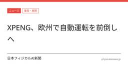
XPENG、欧州で自動運転を前倒しへ
日本フィジカルAI新聞
Forbesは、XPENGが欧州で自動運転技術の展開を想定より早く進める可能性があると報じた。記事は、同社の技術をパリで試した内容に触れている。
7時間前
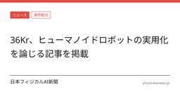
36Kr、ヒューマノイドロボットの実用化を論じる記事を掲載
日本フィジカルAI新聞
36Krが、ヒューマノイドロボットの発展段階を論じる記事を掲載した。記事は、過熱した市場期待よりも実務用途を重視する流れを扱っている。本紙としては、詳細は原典を参照する必要がある。
7時間前
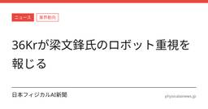
36Krが梁文鋒氏のロボット重視を報じる
日本フィジカルAI新聞
36Krが、梁文鋒氏のロボット重視を取り上げたと報じた。記事は「大型モデルが具身AIモデルを置き換えるのか」という論点を軸にしている。詳細な発言内容や結論は、原典を参照する必要がある。
8時間前
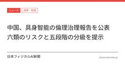
中国、具身智能の倫理治理報告を公表 六類のリスクと五段階の分級を提示
日本フィジカルAI新聞
国家人工智能標準化总体組が10月13日、《具身智能倫理治理研究報告》を公表したとleaderobot.comが10月17日に報じた。翌日には央視《正点财经》が伝えたという。報道によれば、報告は六類の倫理リスクとR1からR5までの五段階分級、六項目の治理原則を示した。具身智能が実験段階を越え、責任分界と安全設計を制度側が先に整えようとしている局面とみられる。
8時間前
Seeed Studio WikiにGR00T推論と実ロボット展開の章
日本フィジカルAI新聞
Seeed Studio Wikiに「Chapter 22 - GR00T Inference and Real-Robot Deployment」が掲載された。主題はGR00Tの推論と実機ロボットへの展開で、技術手順を扱う章とみられる。ただし、公開抜粋だけでは具体的な方式や対象機体の詳細は確認できない。
11時間前
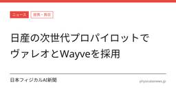
日産の次世代プロパイロットでヴァレオとWayveを採用
日本フィジカルAI新聞
日産の次世代運転支援技術「プロパイロット」に関し、統合役をヴァレオが担い、運転判断の機能にはWayveのAIが組み込まれると報じられました。
15時間前
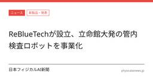
ReBlueTechが設立、立命館大発の管内検査ロボットを事業化
日本フィジカルAI新聞
prtimes.jpは2026年10月15日、「ReBlueTechが設立、立命館大発の管内検査ロボットを事業化」と報じた。
16時間前
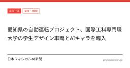
愛知県の自動運転プロジェクト、国際工科専門職大学の学生デザイン車両とAIキャラを導入
日本フィジカルAI新聞
愛知県の自動運転プロジェクトに、国際工科専門職大学の学生がデザインした車両とAIキャラクターが導入された。
16時間前
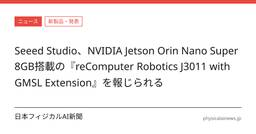
Seeed Studio、NVIDIA Jetson Orin Nano Super 8GB搭載の『reComputer Robotics J3011 with GMSL Extension』を報じられる
日本フィジカルAI新聞
Seeed Studioの「reComputer Robotics J3011 with GMSL Extension」が報じられた。主ソースでは、NVIDIA Jetson Orin Nano Super 8GBを搭載するエッジAIコンピュータとして示されている。公開情報は製品名と採用部品に限られ、性能数値や販売条件は読み取れない。したがって、現時点では製品の位置づけを細部まで判断するより、採用プラットフォームと拡張要素の確認が先になる。
17時間前
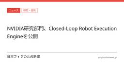
NVIDIA研究部門、Closed-Loop Robot Execution Engineを公開
日本フィジカルAI新聞
NVIDIA Researchは「Closed-Loop Robot Execution Engine」を公開した。
17時間前
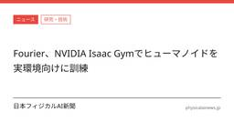
Fourier、NVIDIA Isaac Gymでヒューマノイドを実環境向けに訓練
日本フィジカルAI新聞
Fourierは2024年11月6日、NVIDIAの開発者ブログで、ヒューマノイドロボットを実世界の役割に向けて訓練している取り組みを紹介した。記事は、NVIDIA Isaac Gymを使った訓練手法を軸に、相互作用の多い作業への適用を狙う内容である。公開情報上は、具体的な機体数や量産計画よりも、訓練環境と学習方法が主題である。
17時間前
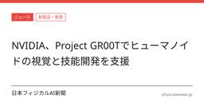
NVIDIA、Project GR00Tでヒューマノイドの視覚と技能開発を支援
日本フィジカルAI新聞
NVIDIAは2024年11月6日、ヒューマノイドロボット向けの視覚と技能開発を支援する「Project GR00T」を公開した。発表文は、ヒューマノイドをメカトロニクス、制御理論、AIが交差する課題として位置づけ、学習・制御の開発基盤を強調している。本件は、ロボット本体の供給よりも、認識と技能獲得を支える計算・学習基盤をどこまで標準化できるかが焦点になる。
18時間前
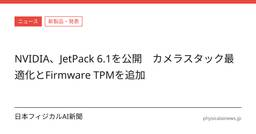
NVIDIA、JetPack 6.1を公開 カメラスタック最適化とFirmware TPMを追加
日本フィジカルAI新聞
NVIDIAは2024年11月21日、エッジAIとロボティクス向けのソフトウェア基盤「JetPack 6.1」を公開した。今回の更新は、カメラスタックの最適化による性能向上と、Firmware TPMの導入によるセキュリティ強化が柱である。ロボット開発で重要な入力側の画像処理と、実機運用で求められる保護機能を同時に更新した点が特徴である。
18時間前
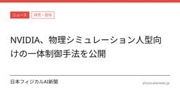
NVIDIA、物理シミュレーション人型向けの一体制御手法を公開
日本フィジカルAI新聞
NVIDIAは2024-12-02、物理シミュレーション上の人型ロボット向けに、全身を一体で制御する手法「Unified Whole-Body Control for Physically Simulated Humanoids」を公開した。対象は、自然な移動と多様な制御入力への応答を両立させるシミュレート人型である。実機量産ではなく、まずはシミュレーション環境での制御と学習の精度を引き上げる位置づけとみられる。
18時間前
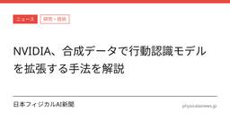
NVIDIA、合成データで行動認識モデルを拡張する手法を解説
日本フィジカルAI新聞
NVIDIAは2024年12月3日、合成データを使って行動認識モデルを拡張する方法を解説した。中心は、実世界のデータ収集だけに依存せず、学習データを増やしてモデルを鍛える考え方である。物体認識ではなく人の行動認識を対象にしている点が、フィジカルAI向けの基盤づくりとして注目される。
18時間前
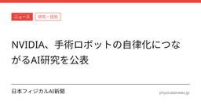
NVIDIA、手術ロボットの自律化につながるAI研究を公表
日本フィジカルAI新聞
NVIDIAは2024年12月10日、手術ロボットが人の手で操作される工程の一部を、自律的に実行できることを示すAI研究を公開した。同社は、手術で一般的に使われるロボットが、縫合などの重要作業を人間と同程度の精度でこなせる可能性を示したとしている。実用化には、安全性、規制、臨床現場での検証の3点が焦点になるとみられる。
18時間前
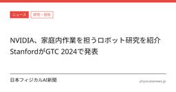
NVIDIA、家庭内作業を担うロボット研究を紹介 StanfordがGTC 2024で発表
日本フィジカルAI新聞
NVIDIAの開発者向けブログは2024年10月30日、GTC 2024でStanford Universityの研究者が家庭内の反復作業に取り組むロボット研究を紹介した。記事は、日常生活の作業をロボットが担う方向性を示し、学習と実機の活用が焦点になると読める内容である。公開情報上は、研究の個別仕様よりも、家庭作業を扱う汎用ロボット学習の位置づけが中心である。
18時間前
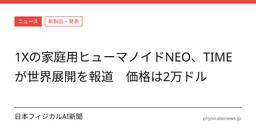
1Xの家庭用ヒューマノイドNEO、TIMEが世界展開を報道 価格は2万ドル
日本フィジカルAI新聞
humanoid.guideが、TIMEの報道として1X Technologiesの家庭用ヒューマノイド「NEO」が2万ドルで世界展開したと伝えた。記事では、家庭内作業への対応や自律機能に関する同社トップの説明が紹介された。詳細は原典を参照されたい。
19時間前